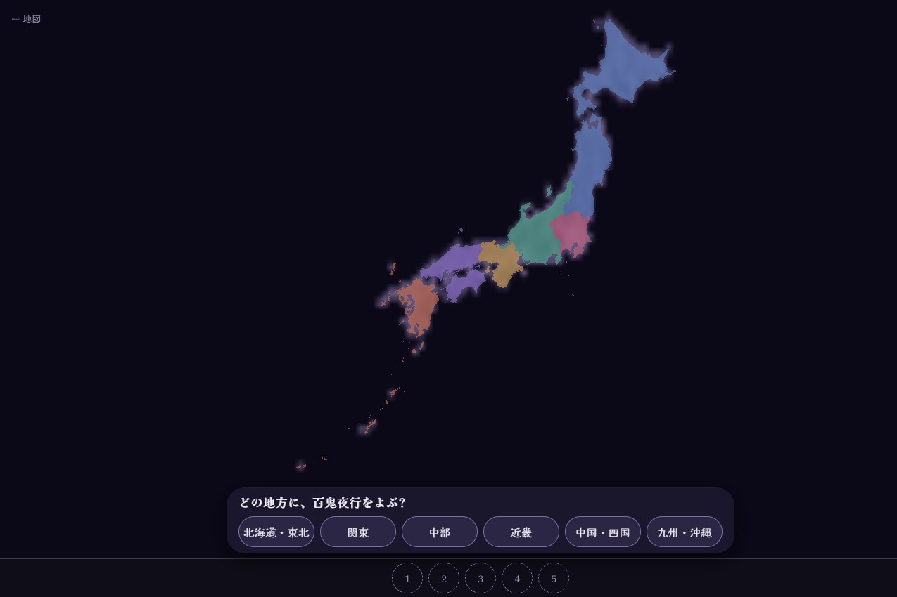

百鬼夜行は、各地に伝わる妖怪を仲間にして、自分の町へ妖怪の行列をよぶゲームです。国際日本文化研究センターの「怪異・妖怪伝承データベース」の記録をもとにしています。
まず地方と自分の町を選び、地図にうかぶ雲の中から気になる妖怪を 5 体さそいます。次に、その 5 体と同じ話をもつ仲間を、ほかの土地からよび集めます。集まった妖怪たちは行列になって、あなたの町へ向かいます。
行列の妖怪をタップすると、もとになった伝承の記録を読むことができます。遊びながら、よく似た話が離れた土地にも伝わっていることに出会える仕組みです。